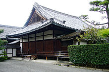
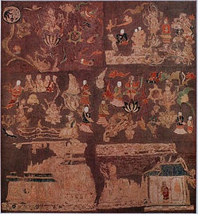

歴史
中宮寺は、現在は法隆寺東院に隣接しているが、創建当初は400メートルほど東にあった。現在地に移転したのは中宮寺が門跡寺院となった16世紀末頃のことと推定される。旧寺地の発掘調査の結果から、法隆寺と同じ頃、7世紀前半の創建と推定されるが、創建の詳しい事情は不明である。天平19年(747年)の『法隆寺縁起』[1]や『上宮聖徳法王帝説』には、「聖徳太子建立七寺」の一とされるが、確証はない。中宮寺独自の創立縁起は伝わらず、『日本書紀』にも中宮寺創建に関する記載はない。
平安時代の『聖徳太子伝暦』は、中宮寺は聖徳太子が母･穴穂部間人皇女(あなほべのはしひとのひめみこ、間人皇后)の宮殿を寺としたと伝え、後には間人皇后自身が発願者であるという伝承も生まれる。鎌倉時代の顕真が著した『聖徳太子伝私記』の裏書には、「葦垣宮、岡本宮、鵤宮(いかるがのみや)の3つの宮の中にあった宮なので中宮といい、それを寺にした時に中宮寺と号した」との説が記載されている。[2]
中宮寺は平安時代以降衰微し、鎌倉時代には中興の祖とされる信如によって復興が図られた。信如は文永11年(1274年)、法隆寺の蔵から聖徳太子ゆかりの「天寿国繍帳」を再発見したことで知られる
江戸時代初期の慶長7年(1602年)、慈覚院宮を初代門跡に迎え、以後門跡尼寺として今日に至っている(門跡寺院とは、代々皇族、貴族などが住持する格式の高い寺のこと)。
伽藍
創建当時の中宮寺跡は現境内の東方約400メートル、斑鳩町法隆寺東二丁目にあり、国の史跡に指定されている。この地はかつての地名を大字法隆寺字旧殿(くどの)といい、伽藍跡とおぼしき土壇が残っていた。1963年(昭和38年)より石田茂作らによる発掘調査が行われ、金堂と塔の跡を検出。大阪の四天王寺と同様に、金堂を北、塔を南に並べる伽藍配置であったことがわかっている。ただし、講堂、回廊等の遺構は未検出である。この伽藍の特徴の一つは、金堂と塔の距離が近く、軒を接するように建っていたと推定される点である。塔の心礎は地中に深く埋める形式とする。これは四天王寺、飛鳥寺、法隆寺などの塔心礎と同様で、創建時代が古いことを示唆する。
その後数次の発掘調査により、寺地を区画する築地の跡が検出され、境内地は東西約130メートル、南北約165メートルの規模であったことが判明した。東西の130メートルは高麗尺の1町にほぼ相当する。[3]
現境内は夢殿のある法隆寺東院のすぐ東に接する子院地を拝借している。本堂は高松宮妃の発願で1968年(昭和43年)に建立した和風の現代建築で、設計は吉田五十八(いそや)である。
文化財
国宝
・木造菩薩半跏像

本尊。飛鳥時代の作。像高132.0cm(左脚を除く坐高は87.0cm)。広隆寺の弥勒菩薩半跏像とよく比較される。寺伝では如意輪観音だが、これは平安時代以降の名称で、当初は弥勒菩薩像として造立されたものと思われる。国宝指定の際の官報告示は単に「木造菩薩半跏像」である。材質はクスノキ材。一木造ではなく、頭部は前後2材、胴体の主要部は1材とし、これに両脚部を含む1材、台座の大部分を形成する1材などを矧ぎ合わせ、他にも小材を各所に挟む。両脚部材と台座部材は矧ぎ目を階段状に造るなど、特異な木寄せを行っている。本像の文献上の初出は建治元年(1275年)、定円の『太子曼荼羅講式』で、同書に「本尊救世観音」とあるのが本像にあたると考えられている。それ以前の伝来は不明である。現状は全身が黒ずんでいるが、足の裏などにわずかに残る痕跡から、当初は彩色され、別製の装身具を付けていたと思われる。[4]
・天寿国繍帳残闕(てんじゅこくしゅうちょう ざんけつ)
染織品は、陶磁器、金属製品などに比べて保存がむずかしい。本品は断片とはいえ、飛鳥時代の染織の遺品としてきわめて貴重なもの。現在、奈良国立博物館に寄託。1982年に製作されたレプリカが現在本堂に安置されている。聖徳太子の母、穴穂部間人皇女と聖徳太子の死去を悼んで王妃橘大女郎が多くの采女らとともに造った刺繍、曼荼羅である。もと2帳。その銘は『上宮聖徳法王帝説』にある。『法王帝説』所収の銘文には、一部に誤脱があるが、飯田瑞穂の考証によって400字の文章に復元されている。飯田の復元案によると、銘文の前半は聖徳太子の一族の系譜を述べ、後半は天寿国繍帳制作の由来を説明している。
重要文化財
紙製文殊菩薩立像－鎌倉時代の作。経巻を芯とし、紙を糊で張り重ねて造像した珍しい仏像で、日本の重要文化財指定の彫刻のうち「紙製」はこの像のみである[5]。像内納入文書から、文永6年(1269年)の作とわかり、同文書にある「信□」は、中宮寺中興の祖である信如と推定される。東京国立博物館に寄託。紙本墨書瑜伽師地論 二巻－奈良時代の作。
その他
- 刺繍阿弥陀三尊来迎像
- 鎌倉時代の作
- 木彫雨宝童子立像
- 鎌倉時代の作
- 表御殿
- 江戸時代後期建立の書院造。登録有形文化財
所在地
〒636-0111 奈良県生駒郡斑鳩町法隆寺北1-1-2アクセス
JR法隆寺駅下車脚注
- [1]正式には『法隆寺伽藍縁起并流記資財帳』
- [2]大橋(1989)、pp18 - 31
- [3]大橋(1989)、pp11 - 18
- [4]大橋(1989)、pp45 - 58
- [5]毎日新聞社『国宝･重要文化財大全』をみると、本像以外に紙製の仏像は収録されていない
参考文献
- 大橋一章『斑鳩の寺』(日本の古寺美術15)、保育社、1989
- 町田甲一『大和古寺巡歴』(講談社学術文庫)、講談社、1989
- 松浦正昭、稲垣晋也、松本包夫『週刊朝日百科』「日本の国宝4」
朝日新聞社、1997